Configuring: product
HIGH RES FIELD
Distance to main entrance
For creating a distance field based on walking through the building, we first created two different neigbourhood stencils to work with. The first stencil shows that going one voxel sideways (in x- or y-direction) the value of the neighbours will increment with 1. However, when someone wants to go a level up or down, this costs more energy than walking on the same level. Therefore, the neighbours in the z-direction will increment with the value of 2.
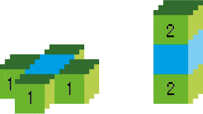
PSEUDO CODE NAKIJKEN
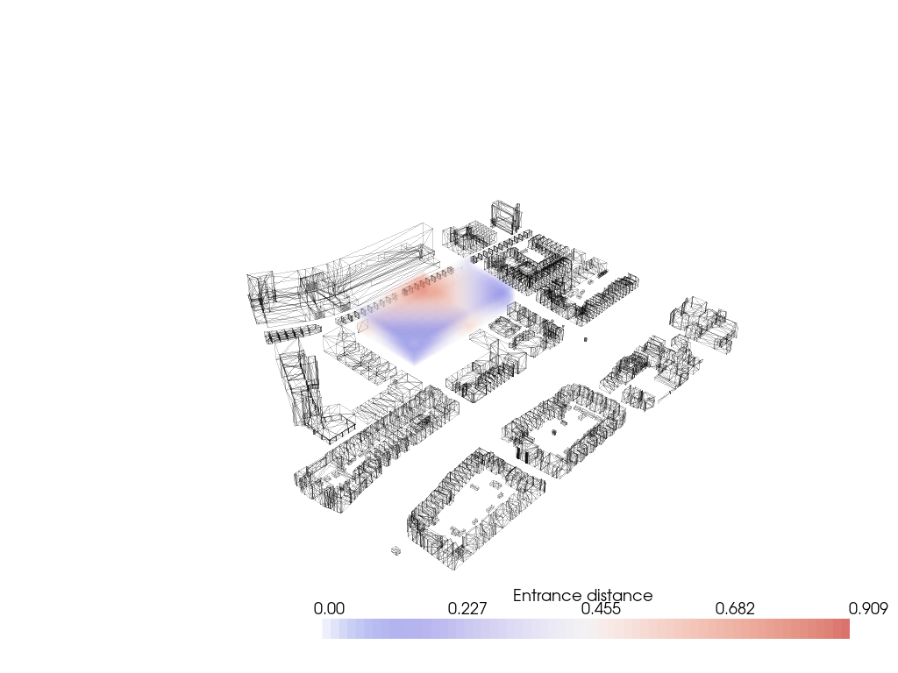
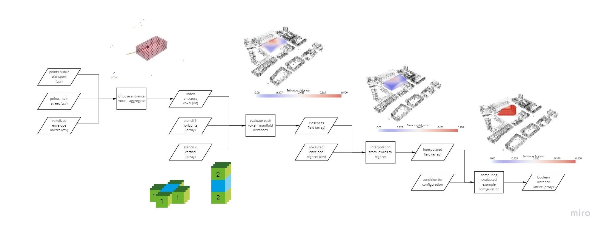
Pseudo code
0. Distance to main entrance field
Input: voxelized_envelope.csv (low and high res), points of main street and public transport
1. Import Meshes
2. Import Lattice
3. Compute from each voxel the average distance to the main street and public transport
Choose the voxel with the minimum distance as the main entrance
Retrieve the neighbour voxels of the main entrance
Set the value of the horizontal neighbours to 1 and the vertical neighbours to 2
For each neighbour:
Find the neighbours and add 1 (horizontal) or 2 (vertical) to it’s value, when it does not have a value yet
Convert the values into values between 0 and 1
4. Construct the field
Output: Distance to main entrance field (low and high res)
Distance to the ground
PSEUDO CODE AANPASSEN
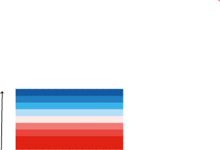
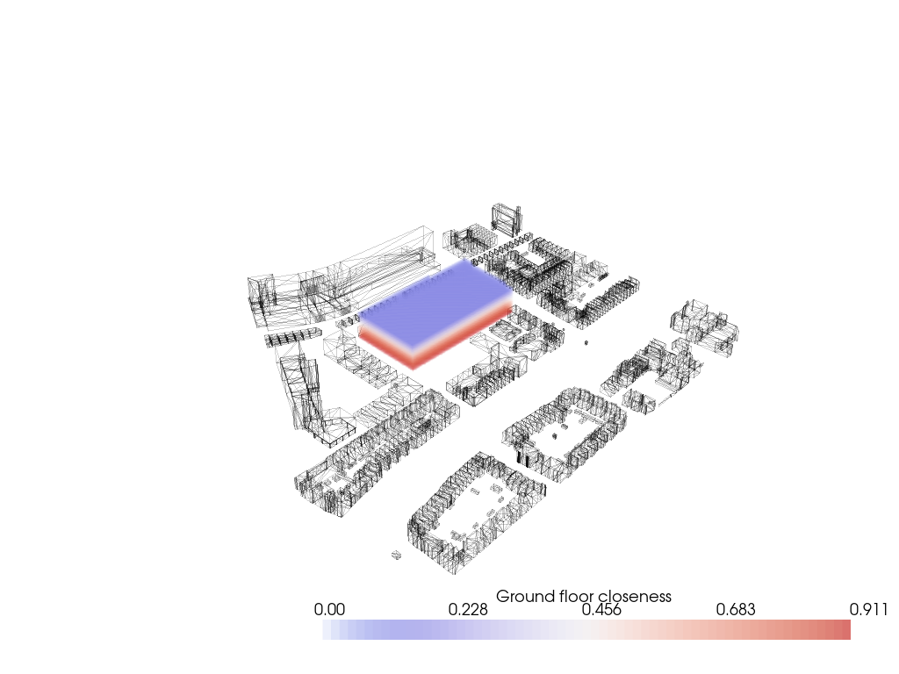
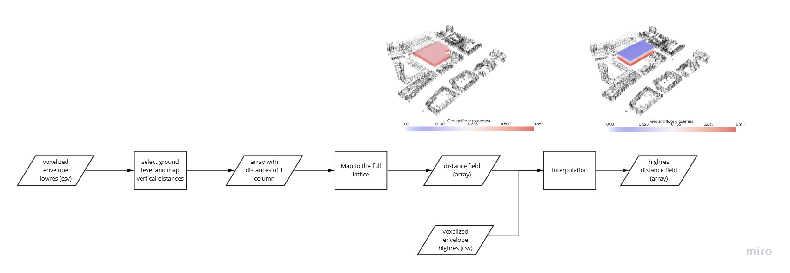
Pseudo code
0. Distance to ground field
Input: voxelized_envelope.csv (low and high res), svf points
1. Import Meshes
2. Import Lattice
3. Initialize vertical adjacency matrix
Calculate distances
4. Construct the field
Output: Distance to ground field (low and high res)
Noise
FLOWCHART UPDATEN
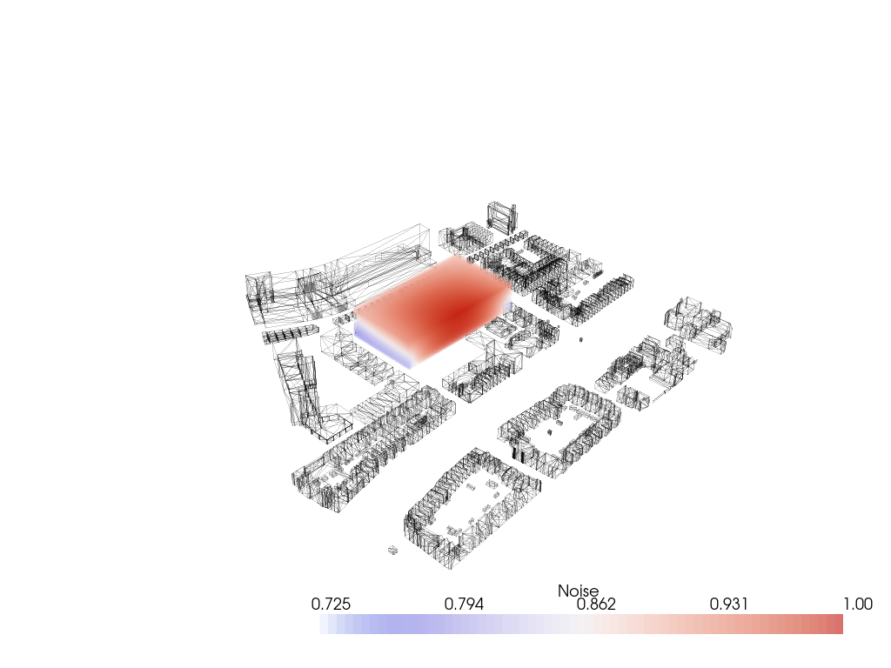
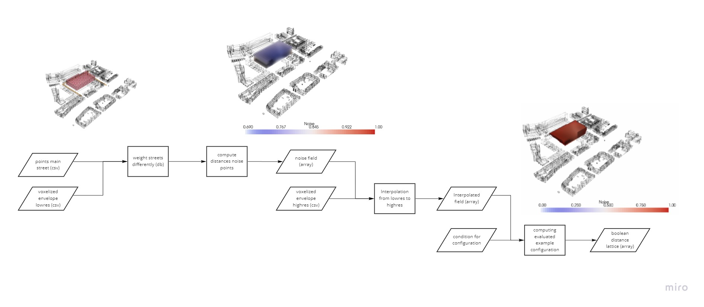
Pseudo code
0. Noise field
Input: voxelized_envelope.csv (low and high res), noise source points, context mesh
1. Import Meshes
2. Import Lattice
3. For each noise source point:
Assign a value corresponding with the amount of noise from that point
For each voxel:
Compute the distance to the noise source points
Multiply the distance by the value of the noise source point
Convert the values into values between 0 and 1 (0 = most noise, 1 = no noise)
4. Construct the field
Output: noise field (low and high res)
Sun Accessibility
Sun Accessibility

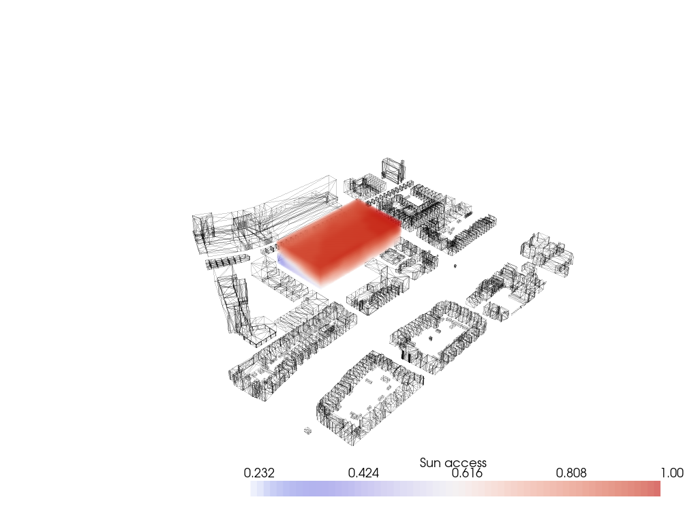
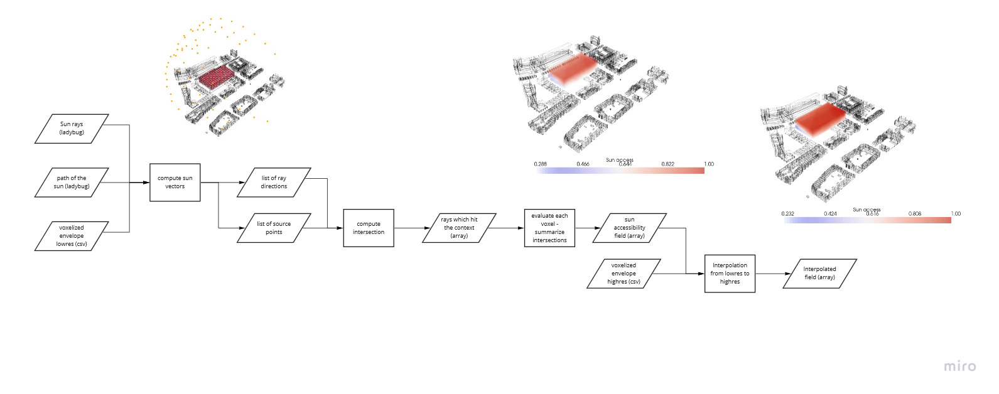
Pseudo code
0. Sun access field
Input: voxelized_envelope.csv (low and high res), context mesh
1. Import Meshes
2. Import Lattice
3. Import Sun Vectors
import Sunpath (ladybug)
4. Compute Intersection
Create list of all vectors pointing towards the sun locations over the year
For all voxels centers:
o Compute rays towards all the sun points
o If ray hits the context, skip that ray
o Else store the ray
Calculate the percentage of time each voxel sees the sun
Convert the values into values between 0 and 1 (0 = no sun, 1 = much sun)
5. Construct the field
Output: sun access field (low and high res)
Shadow Casting
PSEUDO, FLOWCHART EN HIGHRES UPDATEN

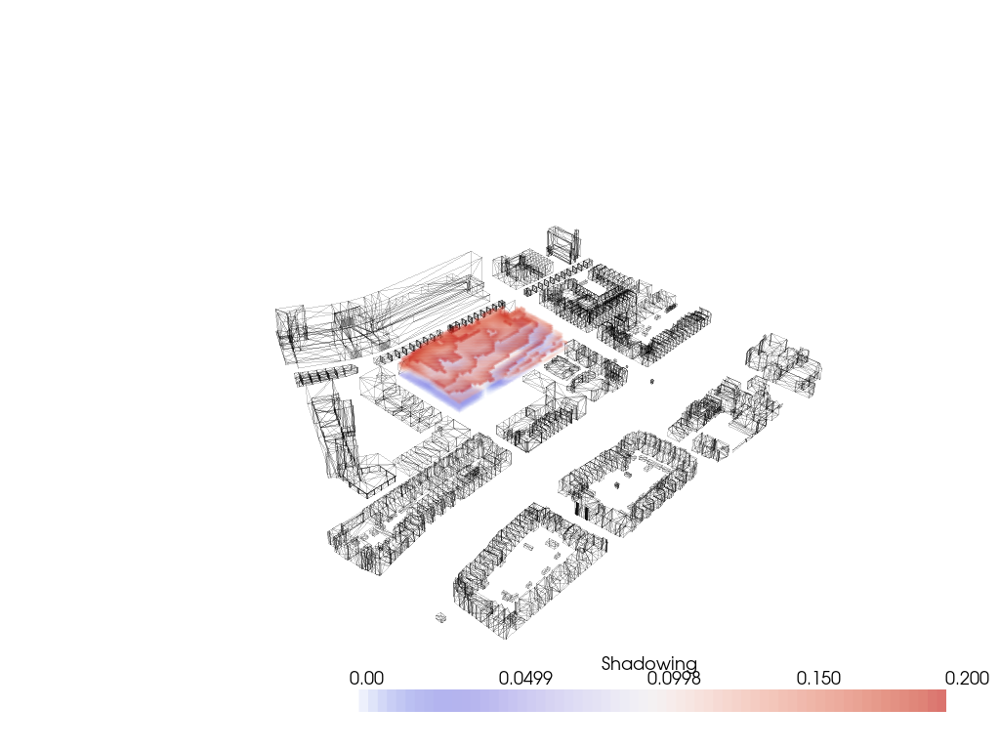
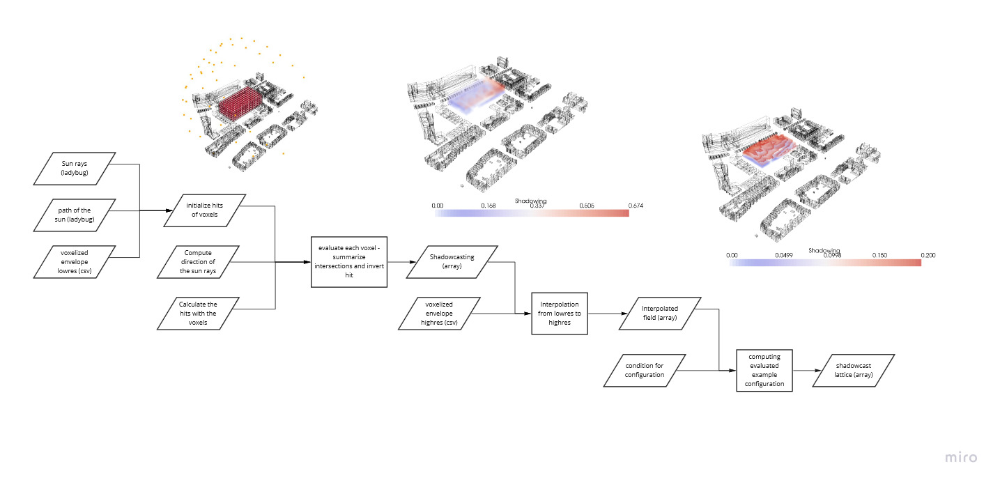
Pseudo code
0. Shadow field
Input: voxelized_envelope.csv (low and high res), context mesh
1. Import Meshes
2. Import Lattice
3. Import Sun Vectors
import Sunpath (ladybug) ????
4. Compute Intersection
Create list of all vectors pointing towards the sun locations over the year
For all voxels centers:
o Compute rays towards all the sun points
o If ray hits the context, skip that ray
o Else store the ray
Calculate the percentage of time each voxel sees the sun
Convert the values into values between 0 and 1 (0 = no sun, 1 = much sun)
5. Construct the field
Output: shadow field (low and high res)
Sky View Factor
PSEUDO AFMAKEN
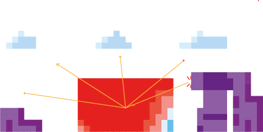
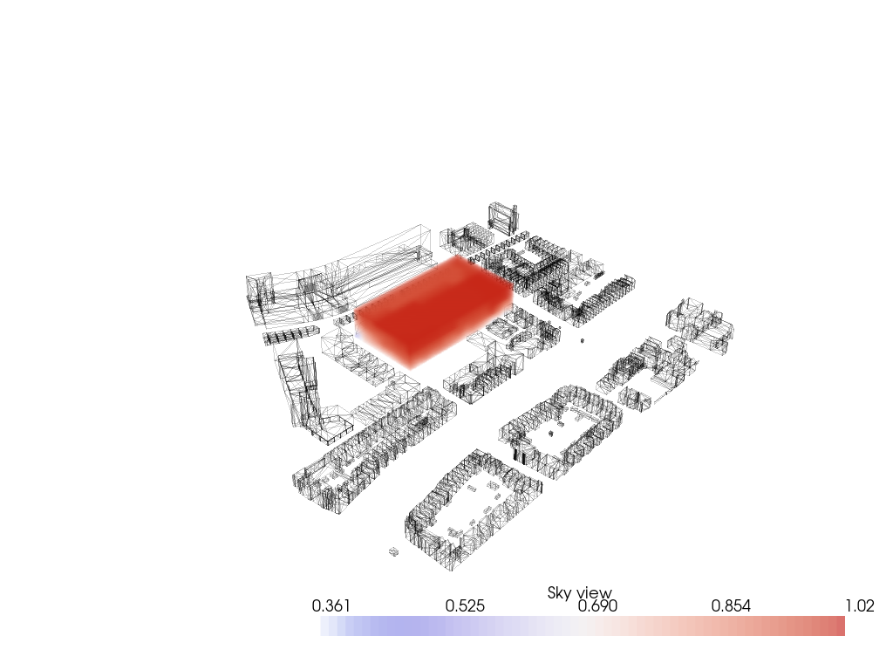
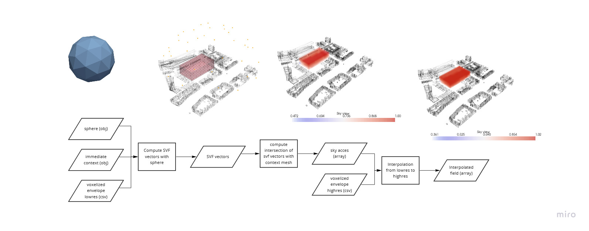
Pseudo code
0. Sky view factor field
Input: voxelized_envelope.csv (low and high res), context mesh
1. Import Meshes
2. Import Lattice SUNPATH????
3. Compute Intersection
Create list of all vectors pointing towards the sun locations over the year
For all voxels centers:
o Compute rays towards all the sun points
o If ray hits the context, skip that ray
o Else store the ray
Calculate the percentage of time each voxel sees the sun
Convert the values into values between 0 and 1 (0 = no sun, 1 = much sun)
4. Construct the field
Output: sky view factor field (low and high res)
View on Greenery
TEST....
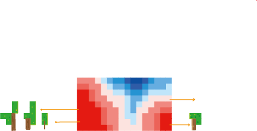
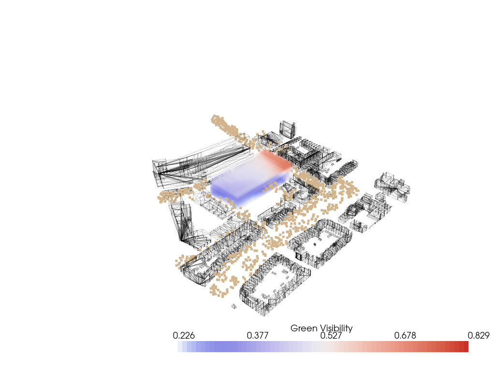
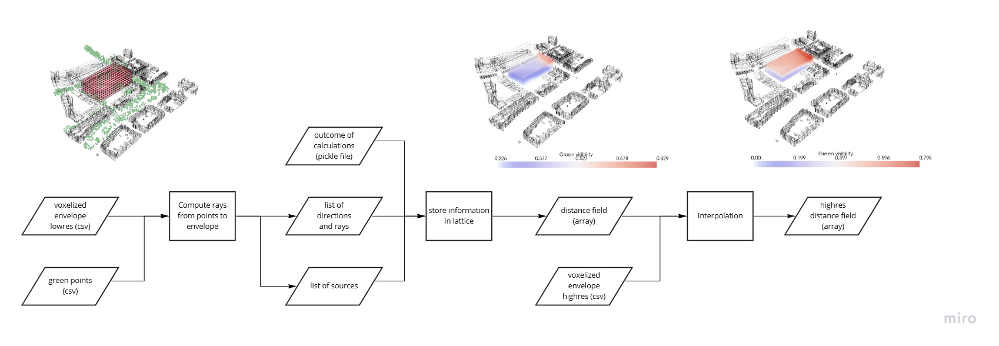
Pseudo code
0. View on Green field
Input: voxelized_envelope.csv (low and high res), green points, context mesh
1. Import Meshes
2. Import Lattice
3. Compute rays from green points to the center of the voxels
For each ray the distance and intersection is calculated
The outcome is reshaped
Convert the values into values between 0 and 1
Construct the view on greenery field
4. Construct the field
Output: view on greenery field (low and high res)